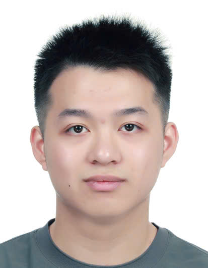

Undergraduate Student @ KAIST
I am an undergraduate student in the School of Computing and Department of Industrial & Systems Engineering at Korea Advanced Institute of Science and Technology (KAIST). My research interests cover various topics in data mining and machine learning, including graph neural networks, time series analysis, recommender systems, and anomaly detection.
Jaemin Yoo @ SNU CSE